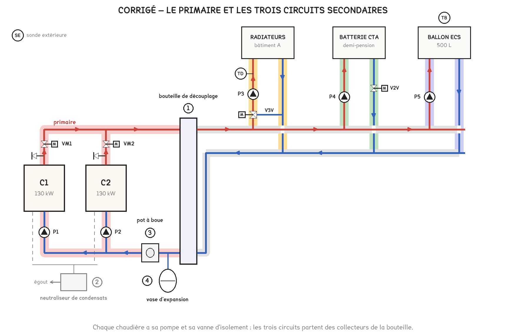
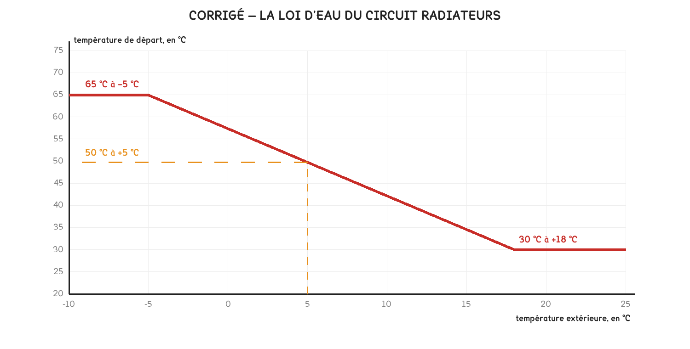

Document de formation du professeur — ne pas diffuser aux étudiants
Formation du professeur · BTS FED option C
Le corrigé barémé d'un exercice au format de l'épreuve : deux chaudières à condensation en cascade, la bouteille de découplage, le retour qui décide du rendement, la loi d'eau et la recharge de l'eau chaude.
| Savoirs | Niveau DBC |
|---|---|
| B1-1 Production de chaleur, chaudières | 3, maîtrise d’outils |
| B1-2 Émission, radiateurs | 3, maîtrise d’outils |
| B11 Régulation | 3, maîtrise d’outils |
| B4-1 Réseaux hydrauliques, typologie | 2 : expression |
UN CAS CONSTRUIT, PAS UNE CHAUFFERIE RELEVÉE
Le collège, ses deux chaudières et leurs réglages sont inventés, sur le modèle des chaufferies et des sous-stations des sessions 2018, 2021, 2022, 2023 et 2026. Les valeurs sont cohérentes entre elles et recalculées ; la courbe de rendement du DT2 est indicative, dans l’ordre de grandeur des notices du commerce, et n’est celle d’aucune chaudière. Le schéma est tracé par
figs-exo-chaufferie.py.
| Moment | Ce qu’on en fait |
|---|---|
| Après les séances 11 et 19 | En entraînement, 1 h 15, les documents indiqués dans chaque question |
| Avec l’espace « chaudières » du professeur | La partie 3 prolonge les leçons « le retour décide » et « répartition ou mélange » |
| Avant les sujets complets des séances 24 et 26 | En autonomie chronométrée, puis correction croisée avec la grille de la séance 25 |
Minutage conseillé : 1 h 15. Parties 1 et 2 en 30 minutes, partie 3 en 25 minutes, partie 4 en 20 minutes.
Ce qu’on ne sacrifie jamais : les questions 8 et 9. Elles portent l’idée qui fait comprendre une chaufferie à condensation : tout ce qui renvoie de l’eau chaude au retour coûte du gaz, qu’il s’agisse d’une vanne en décharge ou d’une pompe primaire de trop. La 9 le chiffre.
Barème indicatif, format des corrigés U41 depuis 2022 : chaque question est cotée de 0 à 3 selon le nombre d’éléments attendus présents. Éval 0 aucun, Éval 1 un élément, Éval 2 deux, Éval 3 tous.
1.
| Repère | Désignation | Fonction |
|---|---|---|
| 1 | Bouteille de découplage | Rendre le débit du primaire indépendant de celui des circuits : chaque pompe travaille sans perturber les autres |
| 2 | Neutraliseur de condensats | Remonter le pH des condensats, acides, avant leur rejet à l’égout |
| 3 | Pot à boue, ou désemboueur | Piéger les boues et les particules du réseau avant qu’elles n’encrassent les chaudières |
| 4 | Vase d’expansion | Absorber la dilatation de l’eau qui chauffe, et maintenir la pression du réseau |
Éléments attendus : la bouteille et l’indépendance des débits · le neutraliseur et l’acidité des condensats · le vase et la dilatation. Le pot à boue n’est pas exigé pour Éval 3.
2. Le schéma surligné :

Éléments attendus : le primaire limité aux chaudières et à la bouteille · chaque circuit secondaire complet, départ et retour · les flèches. Les collecteurs secondaires sont communs aux trois circuits : les laisser d’une couleur neutre, ou en couleur mêlée, est juste.
3. Sans bouteille, les pompes des chaudières et celles des circuits seraient en série et se contrarieraient : une vanne qui se ferme sur un circuit changerait le débit dans les chaudières. La bouteille, sans perte de charge, sépare les deux : les chaudières gardent leur débit, et chaque circuit prend le sien.
Éléments attendus : pompes primaires et secondaires indépendantes · aucune perte de charge dans la bouteille, ou débits indépendants. « La bouteille stocke de l’eau chaude » est l’erreur à relever : elle ne stocke rien, elle découple.
4. Besoins : 170 + 30 + 40 = 240 kW. Installé : 2 × 130 = 260 kW. La puissance couvre les besoins, avec une marge de (260 − 240) / 240 ≈ 8 %.
Éléments attendus : la somme des besoins · la comparaison · la marge rapportée aux besoins. La marge calculée sur 260 kW, 7,7 %, est acceptée si le raisonnement est dit.
5.
| Puissance demandée | Chaudières en marche | Charge de C1 | Charge de C2 | Remarque |
|---|---|---|---|---|
| 20 kW | C1 | par cycles | arrêt | 20 kW est sous le minimum de 26 kW : C1 démarre et s’arrête |
| 80 kW | C1 | 62 % | arrêt | C1 seule, sous le seuil de 90 % |
| 150 kW | C1 et C2 | 58 % | 58 % | C1 seule dépasserait 90 % ; la charge se partage, 75 kW chacune |
| 240 kW | C1 et C2 | 92 % | 92 % | Pleine saison, température de base |
Éléments attendus : la marche par cycles à 20 kW · C1 seule à 80 kW · le partage à 150 et 240 kW, avec les taux justes.
6. Deux raisons parmi trois. La modulation : une chaudière de 130 kW descend à 26 kW ; une de 260 kW ne descendrait qu’à 52 kW, et fonctionnerait par cycles une bonne partie de l’année, en mi-saison comme l’été pour l’eau chaude seule. Le secours : si une chaudière tombe en panne, l’autre assure 130 kW, plus de la moitié des besoins, assez pour la mi-saison et l’eau chaude. L’usure répartie : la permutation hebdomadaire use les deux à l’identique, et l’on entretient l’une sans couper le chauffage.
Éléments attendus : deux raisons justes et expliquées · un chiffre à l’appui, 26 ou 52 kW, ou 130 kW en secours.
7. Brûler du gaz produit de la vapeur d’eau dans les fumées. Elle ne rend sa chaleur latente que si elle se condense, donc si les fumées refroidissent sous leur point de rosée, environ 55 °C. Ce qui les refroidit, c’est l’eau qui entre dans l’échangeur, c’est-à-dire l’eau de retour, la plus froide ; l’eau de départ, elle, a déjà été réchauffée.
Éléments attendus : la vapeur d’eau et sa chaleur latente · le point de rosée, 55 °C · le retour, point froid de l’échangeur.
8. Une vanne trois voies en décharge renvoie dans le retour l’eau chaude que la batterie n’utilise pas : quand la centrale demande peu, de l’eau à 65 °C arrive droit au retour, qui se réchauffe, et la chaudière ne condense plus. Avec une V2V, le débit baisse et la batterie refroidit davantage l’eau qui la traverse : le retour reste froid. En prime, le débit variable permet au circulateur P4 de ralentir.
Éléments attendus : l’eau chaude renvoyée au retour par la décharge · le retour froid avec la V2V · la condensation préservée. Le gain électrique sur P4 est un plus, pas une exigence.
9. Réglage d’origine : les deux pompes tournent, le primaire débite 2 × 5,6 = 11,2 m³/h pour 6,0 m³/h aux secondaires. L’excès, 5,2 m³/h à 65 °C, descend dans la bouteille et se mêle au retour des circuits :
T retour chaudières = (6,0 × 40 + 5,2 × 65) / 11,2 ≈ 51,6 °C, soit un rendement d’environ 100 %.
Une seule chaudière : le primaire débite 5,6 m³/h, moins que les 6,0 m³/h des circuits. Aucune eau chaude ne redescend : la chaudière reçoit le retour des circuits, à 40 °C, et son rendement monte à 104 %. (Les circuits reçoivent alors un départ légèrement mélangé, à 63 °C : c’est sans conséquence ici, chaque circuit régulant sa propre température.)
Le réglage à corriger est la cascade : C2 ne doit démarrer, avec sa pompe, qu’au-delà de 90 % de C1. Ce jour-là, le gain est de 104 / 100, soit environ 4 % de gaz. Répété sur toute la mi-saison, c’est un écart qu’une facture peut montrer.
Éléments attendus : le mélange posé avec les débits, moyenne pondérée · les deux températures et les deux rendements · la cascade à corriger. La moyenne simple (40 + 65) / 2 = 52,5 °C tombe près de la bonne valeur par hasard : la refuser si les débits n’apparaissent pas.
10. La loi tracée :

À +5 °C : 65 − (65 − 30) × (5 − (−5)) / (18 − (−5)) = 65 − 35 × 10 / 23 ≈ 50 °C.
Éléments attendus : les deux points · les paliers · la lecture à 50 °C, à 1 °C près.
11. La V3V mélange deux eaux : l’eau chaude du collecteur, par la voie directe, et l’eau refroidie qui revient des radiateurs, par le by-pass. La sonde mesure 5 K de trop : la vanne ferme sa voie directe et ouvre le by-pass. Plus d’eau de retour, vers 40 °C, se mêle au départ, qui redescend vers 50 °C. Le débit dans les radiateurs, lui, ne change pas : seule la température varie.
Éléments attendus : les deux entrées de la vanne · le sens de la manœuvre · l’eau de retour comme source d’eau froide. La vanne qui « ferme le départ » et coupe les radiateurs confond mélange et tout ou rien : Éval 1.
12. Quand les robinets thermostatiques se ferment, le réseau résiste davantage. Un circulateur à vitesse fixe verrait sa hauteur monter : pression en excès sur les robinets encore ouverts, sifflements, débit trop fort dans les radiateurs restés ouverts. Régulé à pression différentielle constante, P3 ralentit pour garder la même pression : le débit baisse avec le besoin, et sa consommation électrique aussi.
Éléments attendus : la résistance du réseau qui augmente · le risque d’une vitesse fixe, bruit ou excès de pression · le ralentissement et l’économie.
13. E = 1,163 × 500 × (60 − 45) ≈ 8 700 Wh, soit 8,7 kWh. Durée : 8,7 / 40 ≈ 0,22 h, soit 13 minutes environ.
Les légionelles se développent entre 25 et 45 °C environ et sont détruites au-delà de 60 °C. La réglementation sanitaire impose une eau stockée à 55 °C au moins en sortie de ballon : la consigne de 60 °C tient cette exigence avec une marge.
Éléments attendus : l’énergie en Wh ou kWh · la durée · les légionelles. Des kWh divisés par des kW donnent des heures : un résultat de « 0,22 minute » révèle une unité lue de travers.
| Ce qu’on observe | Questions | Ce qu’on reprend |
|---|---|---|
| La bouteille vue comme un réservoir | 1, 3 | Deux pompes en série qui se contrarient, puis la bouteille qui les sépare |
| « C’est le départ qui compte » | 7 | L’échangeur et ses deux entrées : l’eau froide rencontre les fumées |
| La décharge vue comme une économie | 8 | Ce que devient l’eau chaude que la batterie n’utilise pas |
| La moyenne simple à la place de la moyenne pondérée | 9 | Deux débits qui se mélangent : la leçon « répartition ou mélange » |
| La V3V vue comme un robinet tout ou rien | 11 | Deux entrées, une sortie : on dose, on ne coupe pas |
| Wh, kWh et minutes mêlés | 13 | L’énergie, la puissance, et la durée qui en sort |
L'énoncé élève est le document Word EXO-CHAUFFERIE-COLLEGE, dans BTS FED C/23-exercices-types.